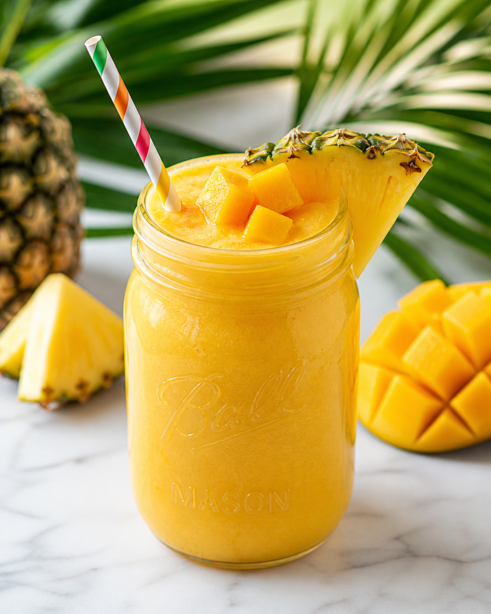

Why I Love This One
I love how cheerful this one tastes. The mango brings that silky sweetness, pineapple adds a little sparkle, and the turmeric gives it a golden depth that makes the whole glass feel special.
When I make this, I usually put on music and let myself take two quiet minutes before the day starts asking for things. It is fruity and fun, but it still feels like I did something kind for my body.
Once the flavors are in your head, the rest is beautifully simple. Here is exactly how I make it in my own kitchen.
Here's What You'll Need
- One cup of chilled coconut water
- One cup of frozen mango chunks
- One half cup of fresh pineapple
- One small ripe banana
- One quarter teaspoon of ground turmeric
- One teaspoon of fresh lime juice
- A small handful of ice
I like to gather everything before I start blending, because smoothies move fast once the blender is out.
Let's Blend It Together
Pour the coconut water into the blender so the fruit has enough liquid to move freely.
Add the mango, pineapple, banana, turmeric, lime juice, and ice, then secure the lid tightly.
Blend until the color turns bright golden and the texture looks smooth enough to pour without stopping.
Taste the smoothie and add another squeeze of lime if you want it tangier.
Pour it into a chilled glass and enjoy it right away while the tropical flavor is fresh and lively.
Made's Tips
Frozen mango makes this smoothie thick without needing yogurt or heavy ingredients.
If turmeric tastes strong to you, start with a tiny pinch and build from there.
A little lime at the end keeps the sweetness from feeling flat.
Here is to mornings that taste a little more like sunshine. Love, Made